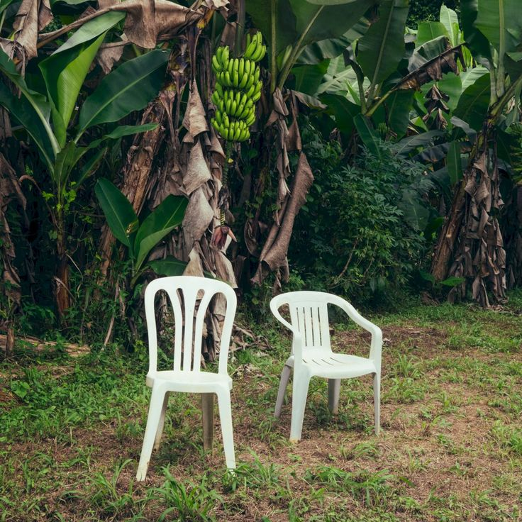
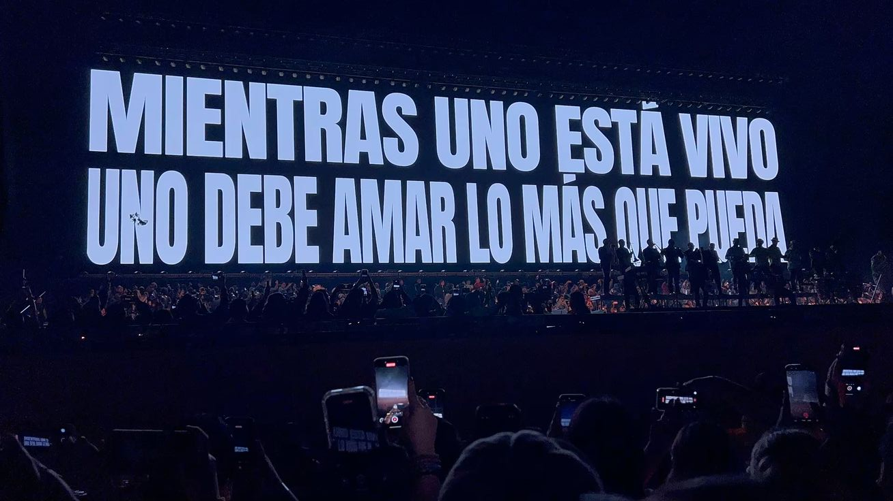

Multimedia
Contenido multimedia relacionado con DeBí TiRAR MáS FOToS.
Audios
DtMF - Bad Bunny
NUEVAYoL - Bad Bunny
Videos
BAILE INoLVIDABLE - Bad Bunny
TURiSTA - Bad Bunny
Fotos


Contenido multimedia relacionado con DeBí TiRAR MáS FOToS.
DtMF - Bad Bunny
NUEVAYoL - Bad Bunny
BAILE INoLVIDABLE - Bad Bunny
TURiSTA - Bad Bunny

